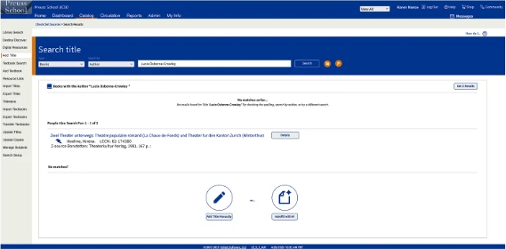
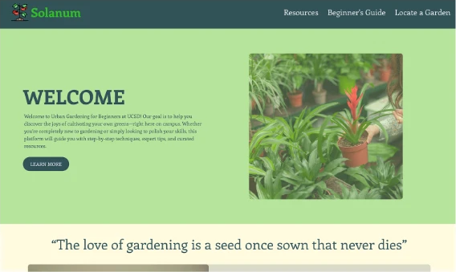
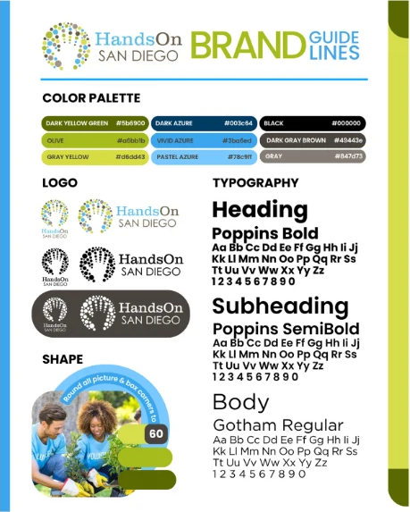

cecilia aspires to enter
the product field through product
management or design
— communicating, connecting,
and delivering a shared experience
[ current projects ]

[Follett Website Redesign] Redesign of high school librarian platform, Follett, tostreamline the cataloguing process UI/UX

[Solanum] Created a website introducing urban gardening aroundUCSD campus, end to end process from ideation to
deployment UI/UX FRONTEND
 [Maverix]
Concert experience hosted through the
[Maverix]
Concert experience hosted through the immersive medium of virtual reality VISUAL DESIGN

[HandsOn San Diego] HandsOn San Diego social media redesign onplatforms Instagram and Constant Contact. VISUAL DESIGN MARKETING [Playground]